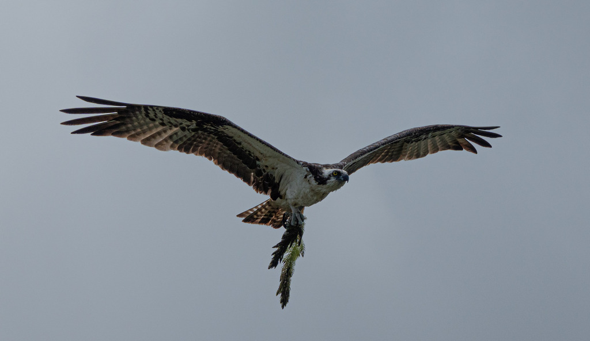

- The osprey is a large fish-hunting hawk found near water almost worldwide, easy to know by its white underside and dark eye-stripe.
- It lives on live fish almost exclusively — and dives feet-first into the water to grab them, sometimes going completely under.
- Its feet are specially built for the job: a reversible outer toe and rough, spiny pads let it lock onto slippery fish like a pair of fish-grippers.
- Like the bald eagle, the osprey was hit hard by the pesticide DDT and has rebounded strongly since the chemical was banned.
Mostly white, with a white head crossed by a bold dark stripe through the eye.
Dark brown.
Long wings held with a distinctive bend, or 'crook,' like a shallow M.
Hovers over water, then plunges feet-first.
A series of clear, high, whistled chirps, often given around the nest.
A large white-bellied hawk over water, hovering and then diving feet-first, or carrying a fish head-forward. The dark eye-stripe and crooked wings separate it from the bald eagle, which is bigger, darker-bodied, and white-headed.
Almost entirely live fish, caught by diving feet-first. It very rarely takes anything else.
Overhead or perched on tall snags and poles near water, sometimes hovering before a dive. More regular than the bald eagle but still a treat to catch.
Florida's own ospreys are largely year-round residents, joined each winter by migrants from farther north. Often seen flying over or perched near water.
Enjoy from a distance and do not disturb nests. Active nests are protected, and approaching one can cause the birds to abandon eggs or young.


- © Rob Carr (CC-BY-NC), via iNaturalist
- © Randall Carter (CC-BY-NC), via iNaturalist